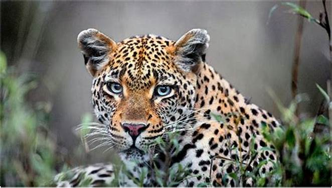
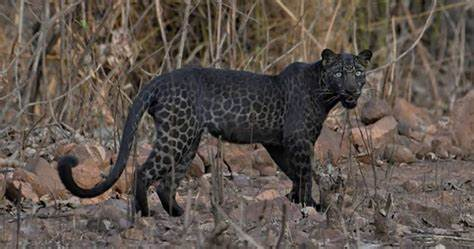

O leopardo, Panthera pardus, também chamado de pantera, faz parte da família dos felinos e comumente confundidos com as onças-pintadas. Os leopardos distinguem-se da onça pintada pela cor suave do pelo dourado com manchas negras, olhos claros e transparentes e formas esbeltas, mas principalmente pelas manchas que no leopardo são circulares e nas onças são em formato de rosas. Alguns leopardos são completamente escuros devido à concentração de melanina na pele e chamados "panteras negras".
O leopardo é encontrado na África, na Ásia, e algumas partes da Europa. A África é o continente que concentra a maior variedade de subespécies, totalizando 11 tipos diferentes. Não existem estimativas assertivas quanto ao número de indivíduos no meio ambiente devido à escassez cientifica neste ramo. De hábitos predominantemente noturnos, mas podem ser vistos em atividade durante o dia. Possuem a dieta mais ampla dentro dos carnívoros de grande porte, caçam aves e outros mamíferos de menor e maior porte que o seu. Com uma única patada pode provocar feridas graves em suas presas. O leopardo usa a sua força para transportar a sua caça para cima de uma árvore e assim tira do alcance de outros predadores como os leões e as hienas que muitas vezes podem afugentar o leopardo de perto da caça. Um leopardo consegue carregar animais 6 vezes mais pesados que ele mesmo. Muitas vezes o leopardo com fome pode comer qualquer coisa até mesmo um inseto e quando há escassez de antílopes e gnus, suas caças mais comuns, ataca babuínos e outros macacos para se alimentar.
As características do animal são: o corpo robusto, pescoço longo, patas curtas com unhas afiadas e cauda longa, pelagem densa e amarelada com manchas em forma de circulo, são excelentes escaladores de árvores. Mede até 2,5 metros de comprimento considerando a cauda (que geralmente mede 1 metro) e pesa cerca de 90 kg, são animais solitários, sendo encontrados em duplas apenas na época do acasalamento.O habitat do leopardo varia muito, podendo ser encontrado em florestas tropicais, planícies de pastagem, desertos e áreas alpinas. Os leopardos também podem persistir perto de grandes cidades, incluindo Mumbai e Johanesburgo. Os machos se locomovem em territórios de até 40 km² e normalmente sobrepõe o território de várias fêmeas. A época de acasalamento começa em fevereiro e vai até março, o período fértil da fêmea dura cerca de 6 a 7 dias. Sua gestação dura aproximadamente de 90-105 dias e ninhada de 2 a 4 filhotes. O filhote tem a pelagem clara no tom de bege quase chegando ao branco.